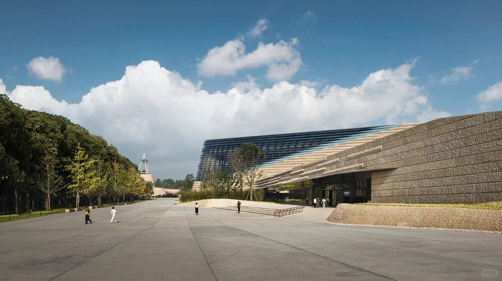
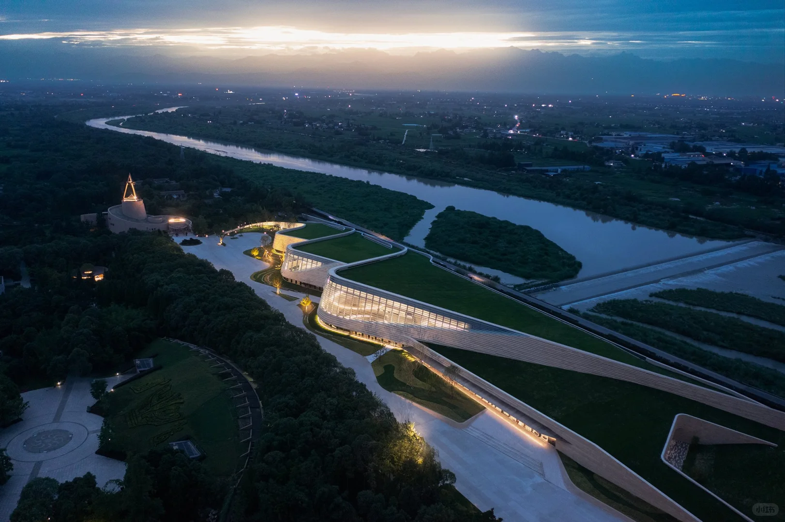
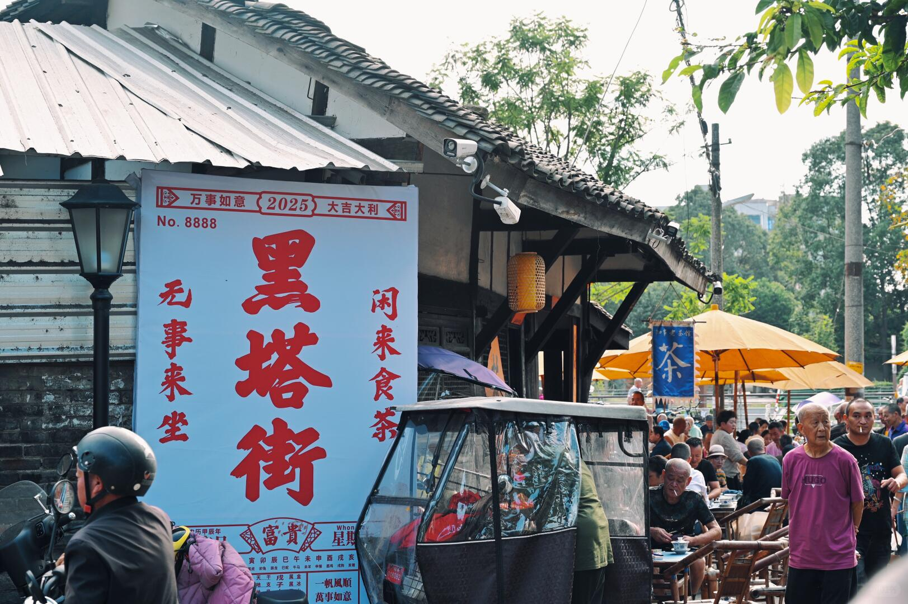
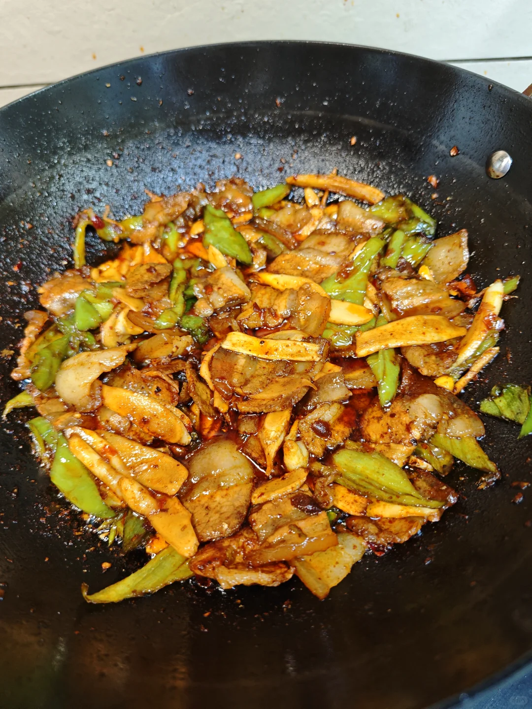
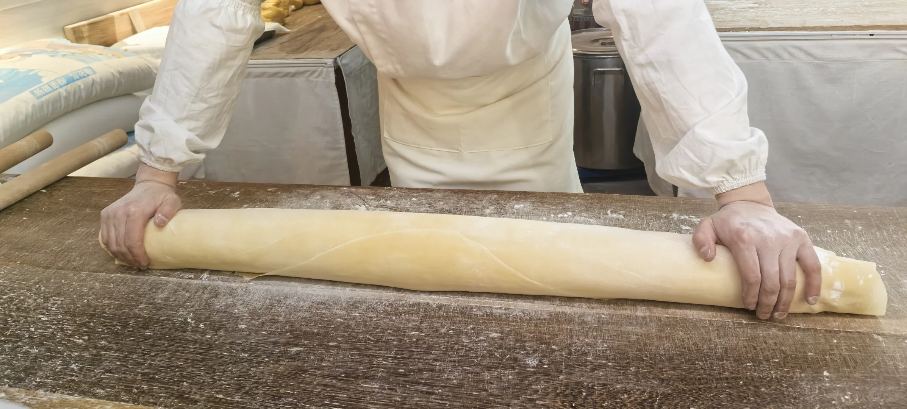
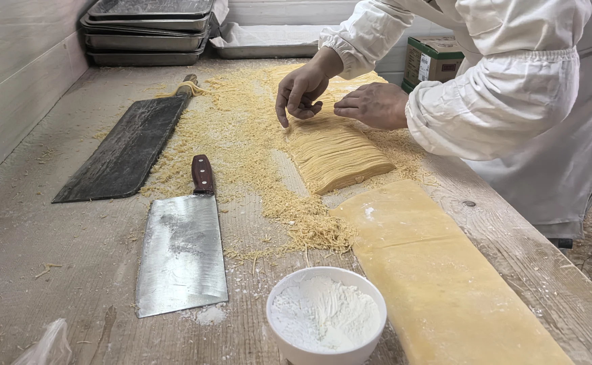
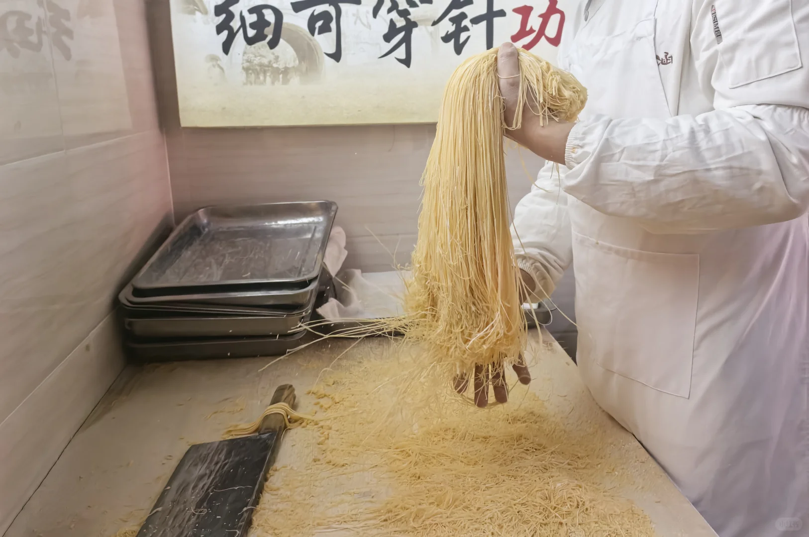

上午 · 古蜀文明
先到三星堆，打开三千年前的想象
从百年考古脉络进入“巍然王都”与“天地人神”。不要只追逐明星文物，也留意人像的发式、手势与器物之间的关系。
- 建议 3–5 小时
- 适合首次到访
- 建议提前预约


不再按“景点、美食、民俗”罗列信息，而是按一天的真实节奏推进：上午看古蜀，午后读古城，傍晚走街巷，夜晚回到餐桌。
从百年考古脉络进入“巍然王都”与“天地人神”。不要只追逐明星文物，也留意人像的发式、手势与器物之间的关系。

雒城遗址与房湖公园相连。城墙、铭文汉砖、唐代湖池、文庙与碑刻叠在一处，城市的不同年代可以在步行中被看见。


旅行不必停在景区出口。老城的店招、茶馆与来往行人，让宏大的历史重新落回日常生活。这里适合放慢脚步，而不是赶下一个打卡点。

连山回锅肉的火候与金丝面的坐杠、切面，是广汉最生动的手艺现场。它们不是“美食列表”，而是旅行最后一章。

三星堆位于城市西侧，雒城、房湖与老城街巷构成市区步行段，金雁湖沿鸭子河展开，连山则在城区以东。图示用于理解方位，不替代实时导航。
三星堆建议放在上午，并在出发前核验预约与开放信息。
雒城、房湖与老城可连续安排，减少来回折返。
连山更适合作为第二天或当季专题，不建议硬塞进紧凑一日线。
每张卡片先回答“要留多久、适合谁”，再进入历史与看点，帮助你决定去哪里，而不是只收藏一串名字。
坐杠压面、大刀切面、提起成丝，连续动作把一团面变成细如金丝的地方味道。



交通班次、票务、预约与临时开放范围都可能变化。这里提供决策顺序，不把动态信息写成永久承诺。
可查询前往广汉北站或三星堆站的当日车次；到站后再按目的地选择公交、出租车或网约车。
三星堆、市区老城与连山分属不同方向。先按路线分组，再使用实时地图确认道路和停车信息。
三星堆先看官方预约；桃花与节庆先看日期和天气；雒城、房湖先确认现场开放范围。